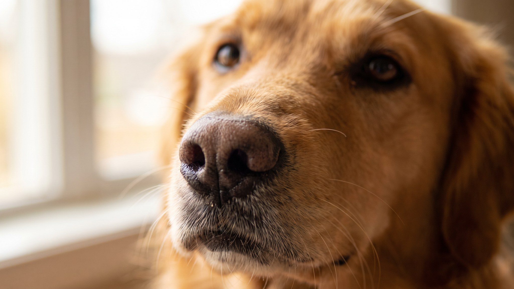

Зимний асфальт несёт сразу несколько угроз: реагенты, соль, острые края льда. Всё это собирается на лапах, шерсти и слизистых за одну прогулку. Большинство повреждений заметны только при осмотре дома, а не на улице. Семь шагов, которые занимают 3–4 минуты и помогают поймать проблему до того, как она разрастётся.
🐾 Чтобы уход не держать в голове
AnimaLife напомнит, когда стричь когти, вычёсывать, купать и обрабатывать от паразитов, и заведёт дневник по вашему питомцу. Бесплатно.
Настроить напоминания → Настроить в MAX →
У вас iPhone? AnimaLife есть в App Store
Шаг 1. Лапы снаружи. Прямо у двери осмотрите подушечки: трещины, порезы, покраснение между пальцами. Реагент вызывает химический ожог в течение нескольких часов, поэтому смывать его нужно сразу: тёплой водой из ковшика или под краном. Щёткой-сполоскивателем (lick-ex) удобнее, но не обязательна.
Шаг 2. Межпальцевые промежутки. Раздвиньте пальцы. Там скапливается соль и могут застрять льдышки. Если шерсть между пальцами длинная, её подстригают раз в 2–3 недели.
Шаг 3. Когти. Пробегитесь взглядом по длине. Если когти цокают по полу при ходьбе, пора стричь.
Шаг 4. Шерсть и живот. Уберите снег и льдышки с шерсти на животе и за ушами до того, как они растают под одеждой и намочат кожу. У короткошёрстных собак это некритично, у длинношёрстных важно.
Шаг 5. Глаза. Небольшое слезотечение после мороза считается нормой. Выделения жёлтого или зелёного цвета, прищуривание или покраснение конъюнктивы требуют осмотра ветеринара.
Шаг 6. Нос. Чуть влажный, без корок и выделений. Сухость после прогулки на морозе сама по себе ни о чём не говорит. Корки и постоянная сухость весь день стоят проверки.
Шаг 7. Уши. Быстро осмотрите ушной канал: покраснение или запах после прогулки в снег иногда означает попадание воды. Просушите снаружи мягкой тканью, не лезьте внутрь ватной палочкой.
После каждой зимней прогулки достаточно шагов 1–4. Полный осмотр (1–7) делайте раз в день, лучше вечером. В период сильных морозов или после прогулки по свежепосыпанному тротуару делайте полный осмотр каждый раз.
Признаки, что осмотр можно сократить до минимума: подушечки без трещин и покраснений, собака не лижет лапы настойчиво, нет прихрамывания.
Запишитесь к врачу, если после прогулки заметили:
Материал носит информационный характер и не заменяет очную консультацию ветеринара.
🐾 Заведите дневник ухода за собакой
Вес, шерсть, обработки, прививки — всё в одном месте. А если что-то смущает, AI-ветеринар ответит круглосуточно и бесплатно.
Завести дневник → Завести в MAX →
У вас iPhone? AnimaLife есть в App Store
🐾 Понравился разбор?
Подпишитесь на канал — каждый день разбираем по одному тревожному симптому у кошек и собак: что в пределах нормы, а когда пора к врачу. Подпишитесь, чтобы не пропустить разбор, который может спасти здоровье вашего питомца.